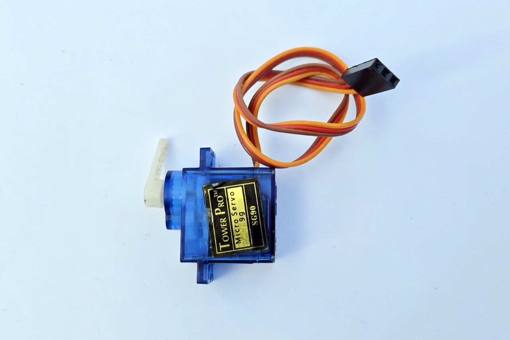
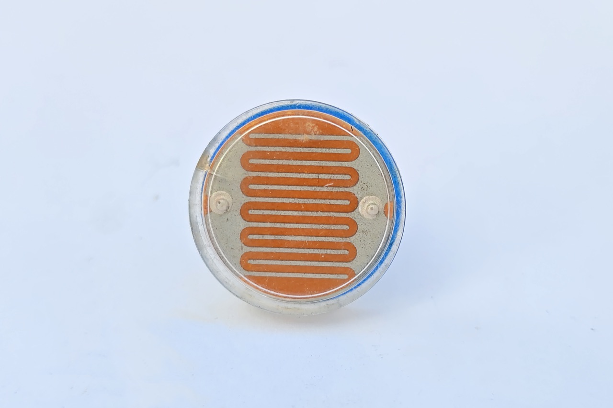
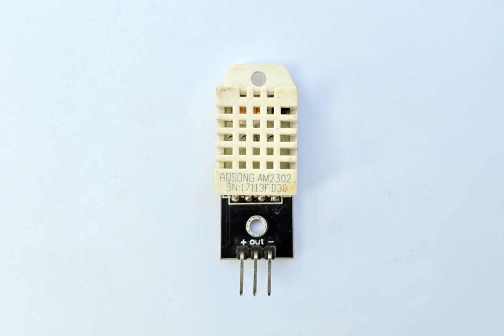
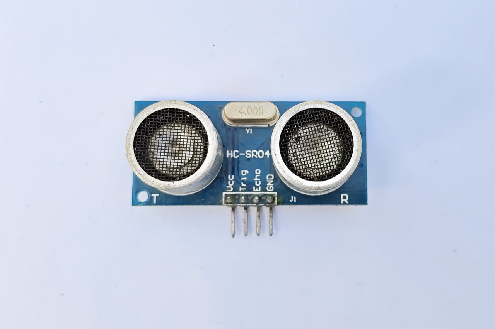

機電整合的電子周邊
控制板是大腦,但它需要「感官」來感知世界、需要「手腳」來執行動作。這些周邊元件,讓機電系統真正活起來。
機電整合的基本架構
機電整合(Mechatronics)的系統,可以拆解成三個環節:
用程式精準控制旋轉角度
伺服馬達(Servo)和一般馬達不同——它能精準轉到指定角度(常見 0°～180°)。 拖動滑桿,看伺服臂轉到對應角度,下方的「序列埠監控視窗」也會即時印出角度值。

常見的感測器
感測器是系統的「感官」,把物理世界的變化轉成電訊號。常見的有:
光敏電阻、光電二極體——偵測環境亮度,如自動感應燈。
如 DHT11/DHT22——偵測溫度與濕度,用於環境監測。
超音波(HC-SR04)、紅外線——偵測物體距離,用於避障、停車。
按鈕、電容觸控——偵測使用者的操作輸入。



虛擬接線實驗 + 即時讀值
認識感測器後,實際看看它怎麼「接到」ESP32 的哪幾隻腳。選一個感測器,點「▶ 接線通電」看完整接線動畫, 再拖動環境變數(亮度、距離等),觀察 ESP32 即時讀到的值並印在序列埠監控視窗。
序列埠通訊(Serial)
序列埠(Serial)是控制板與電腦之間傳遞訊息的管道。透過它,我們可以: 把感測值傳回電腦觀察、為程式除錯(Debug),或與其他裝置互傳資料。
程式中用 Serial.begin(鮑率) 啟用、用 Serial.println() 印出訊息。
電腦端的序列埠監控視窗就能看到這些訊息——上方的互動就示範了這個概念。
開關彈跳(Bounce)
機械開關的接點在切換的瞬間,會快速地「閉合→打開→閉合……」彈跳數次才穩定下來, 這稱為彈跳現象(約 20～50 ms)。微處理器速度極快,會把這些彈跳誤判成多次按壓。 解決方法稱為「去彈跳」(Debounce):在程式中加一點延遲、或等待接點穩定後再讀取。